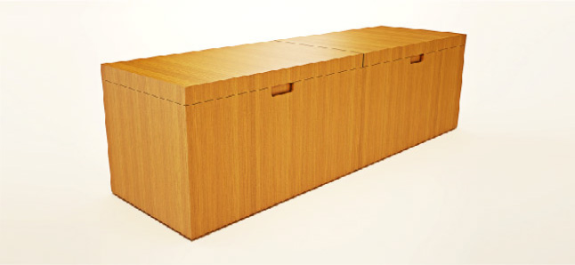
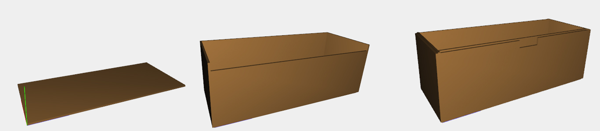
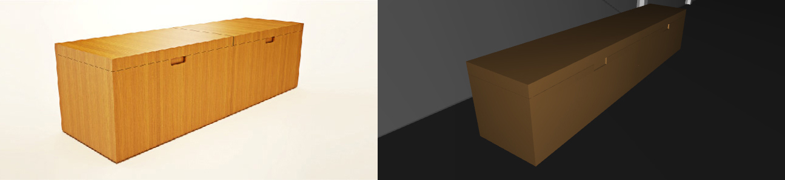

Boot Box
Description
This storage container, affectionately known as the “Boot Box”, was designed for the Farnsworth House to store shoes and boots out of sight. Its height is designed to serve as a seat to put on or take off shoes and boots, which is quite often necessary as the house sits in the open landscape and appropriate footwear is required to take a walk.
Development
The Box is entirely built by CUBOIDs. The function boot_box() builds a bottom CUBOID of height 0.05, depth 1.8 and width 4.8. All the space in the box is surrounded by a double wall, so it creates before the external lateral CUBOIDs and then duplicates them, translating them insider.
Complete model
In the end the box is up-closed with CUBOIDs of height 0.3.
Sources: dirklohandesigns.com